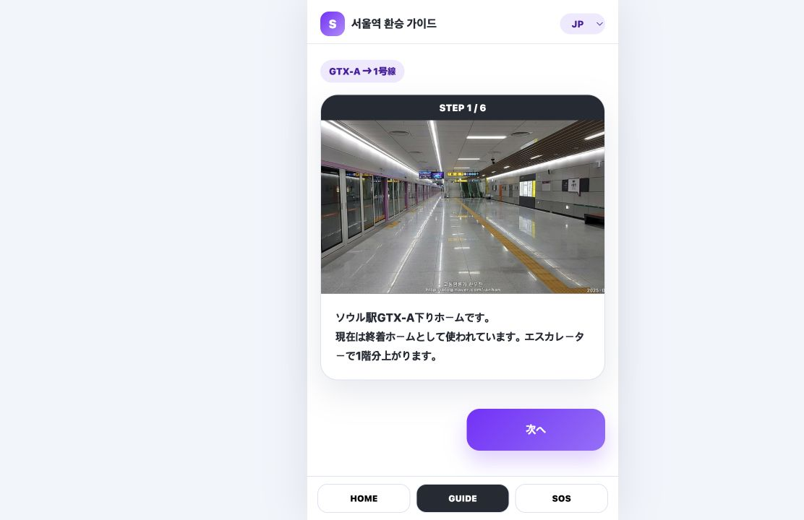
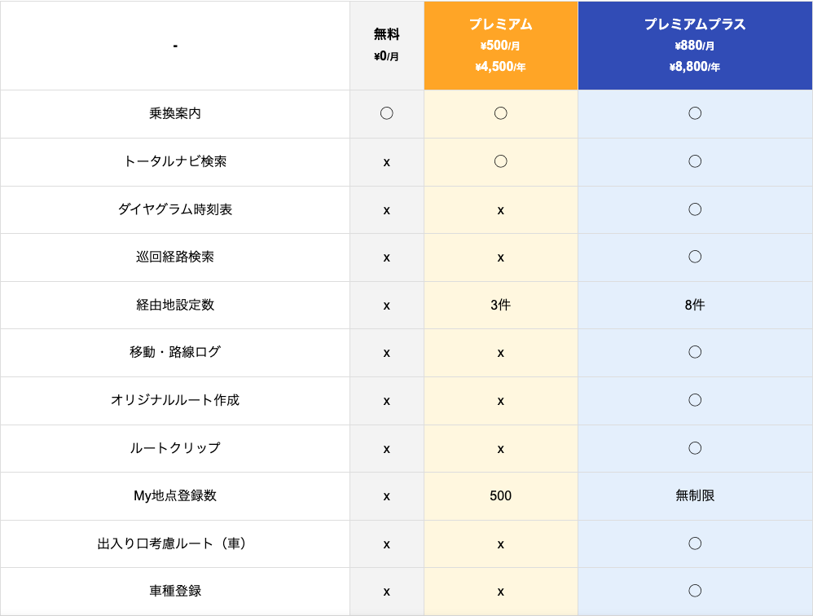
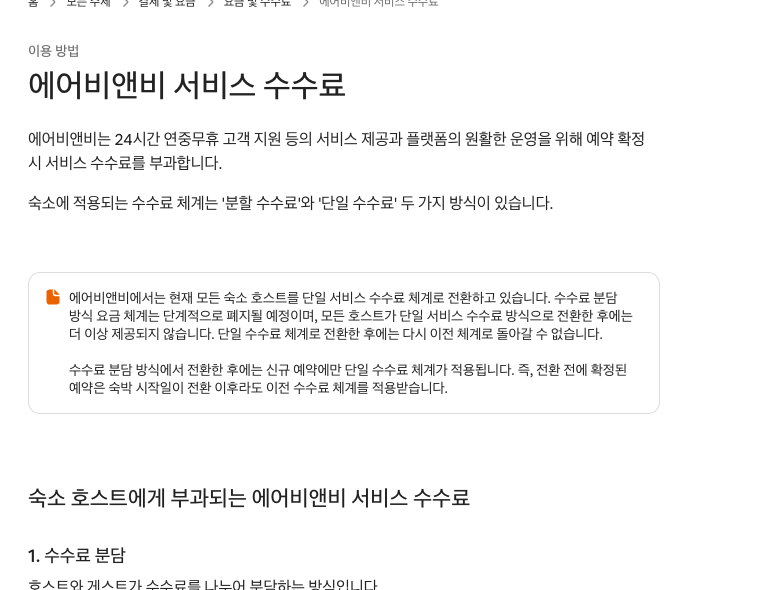
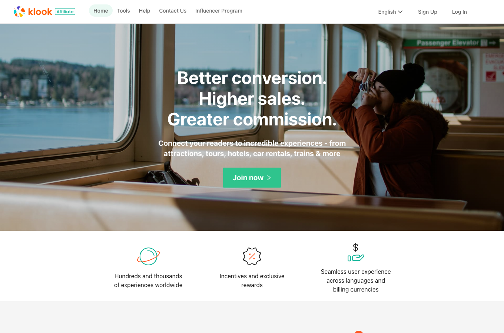
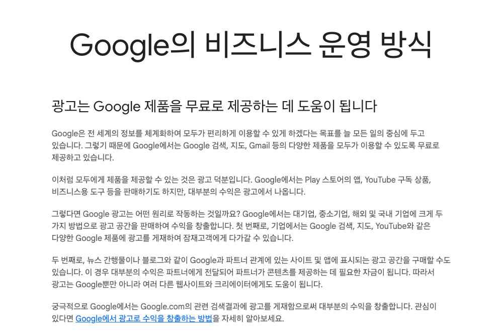

サービスの運営に必要な費用
情報の維持観光情報・価格・営業時間の確認、翻訳
運営サーバー・AI利用料、予約・問い合わせ対応
集客と連携広報、提携先の管理
収益化は、サービスを続けるための仕組み。
今日は、自分たちに合う収益方法を一つ選ぶ。
観光サービスの収益化
自分たちのサービスに合う方法
担当 崔ナリ
収益化は、サービスを続けるための仕組み。
今日は、自分たちに合う収益方法を一つ選ぶ。

画面そのものより、
時間・不安・失敗を減らす価値。
| サービス | 利用する人 | 費用負担の例 |
|---|---|---|
| 検索 | 検索する人 | 広告主 |
| 飲食店の検索・予約 | 旅行者 | 顧客を獲得する飲食店 |
| 観光安全サービス | 観光客 | 自治体・観光機関 |
利用者から料金を受け取る必要がある？
使う頻度・期間が違えば、料金の仕組みも変わる。
毎月使い続ける観光客は？
利用しない期間にも支払い
最初の5回は無料
以降は7日間の利用券
利用期間と、料金の対象期間を合わせる。
候補を探して比較
旅行者は席を確保
飲食店は顧客を獲得
収益化の例：予約成立時に、飲食店から手数料
大きな価値を得る人・店舗は、費用を負担する候補にもなる。

便利な追加機能に、利用者が月額・年額で支払う。

予約を成立させる価値と、サービス手数料を結びつける。

交通パス比較サイトも、購入先への紹介で収益を得る方法がある。
観光客以外にも、サービスを支える理由がある。

使う人と、費用を負担する人が異なる。
| サービス | 利用のされ方 | 合いそうな収益方法 |
|---|---|---|
| ソウル駅の案内 | 旅行中に繰り返す | 数回無料＋短期利用券 |
| 飲食店の予約 | 検索から予約へ | 利用者無料＋店舗の手数料 |
| 交通パスの計算 | 旅行前に数回使う | 無料＋購入先の紹介手数料 |
| AI旅行日程 | 個別の希望に対応 | 基本無料＋一部機能有料 |
| サービス | 利用のされ方・価値 | 合いそうな収益方法 |
|---|---|---|
| 観光体験の紹介 | 予約・決済につながる | 取引手数料 |
| 観光パス | 利用期間が明確 | 1日・3日・7日の利用券 |
| 観光安全サービス | 公共的な価値が大きい | 機関・自治体の運営費 |
| 旅行記録 | 長期間、繰り返し使う | 基本無料＋定期課金 |
実際の1位は、広告費を最も多く支払った店。
広告と通常のおすすめが区別できないと、信頼を損なう。
収益を得る方法も、サービス体験の一部。
どの方法が自然？ 利用のされ方から理由を説明。
誰に、どのタイミングで価値が生まれる？
利用頻度と、購入へのつながりから理由を説明。
中心となる収益方法を一つ選び、理由を記入。
Activity 11｜収益化ワークシートを開く ↗私たちのサービスは、［収益方法］で収益を得ます。
その理由は、［利用のされ方・価値］に合うからです。
支払う人・タイミング・支払方法も具体的に。